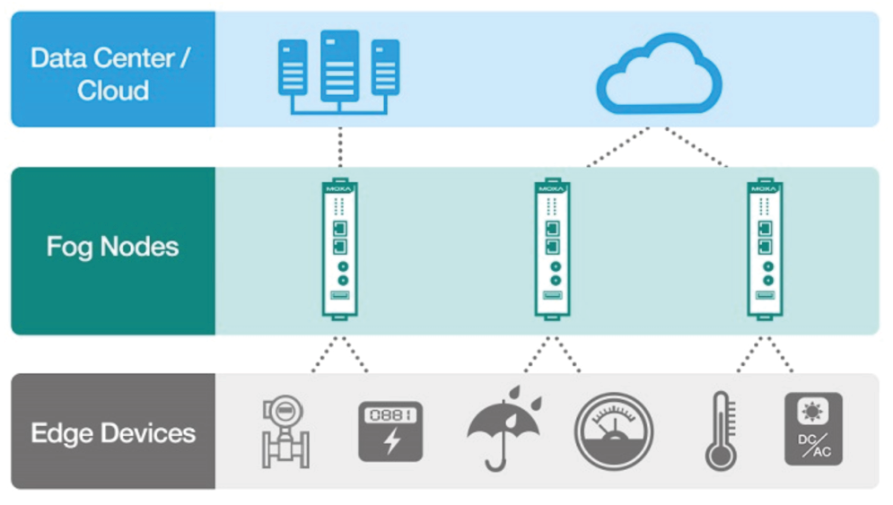
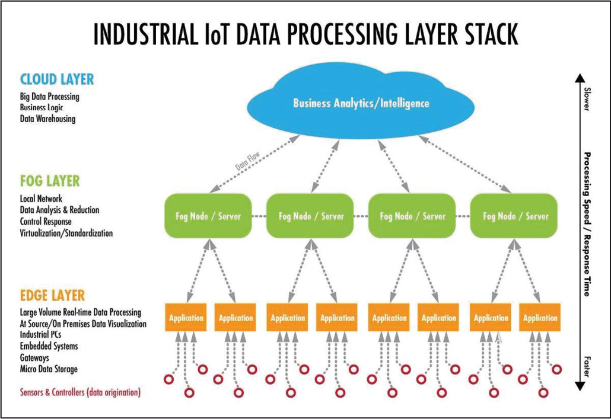

18 Más allá de los dispositivos: Descifrando el potencial infinito de la IoT {#5.2 }
PALABRAS CLAVE Innovación en IoT, Avances Tecnológicos, Soluciones IoT, Aplicaciones IoT, Seguridad en IoT, Tendencias en IoT
18.1 Artículo
El internet de las cosas(IoT) se encuentra en constante cambio, es por ello que los desarrollos en IoT crean bases sólidas para la integración tecnológica en la vida cotidiana de las personas. A medida que el tiempo avanza, la infraestructura IoT se expande, dando lugar a innumerables posibilidades para aplicaciones IoT en diversos ámbitos, cambiando la manera en la que se interactúa con las cosas y el mundo que nos rodea.
Las tendencias en IoT van encaminadas a la personalización y adaptabilidad, donde las soluciones IoT se desarrollan para suplir las necesidades específicas de las personas, dado esto, es importante entender los últimos avances en este campo, donde juega un papel fundamental en la revolución digital, al mismo tiempo está moldeando el futuro cercano. En el avance del internet de las cosas cómo los dispositivos se comunican y colaboran entre sí, crea un ambiente digital interconectado que va más allá de los conceptos tradicionales de la conectividad, ya que el IoT no solo hace más fácil la recopilación de datos en tiempo real a través de una red de sensores, sino que también permite el análisis de estos datos y así permite tomar decisiones y generar acciones automatizadas, lo cual conduce hacia sistemas cada vez más autónomos capaces de tomar decisiones inteligentes a través del aprendizaje automático del entorno.

Hace años se creía que el IoT tardaría en llegar, debido a los avances tecnológicos ya no es algo ficticio o que se pensaba que estaría en el futuro, el internet de las cosas es algo que ya es presente en la actualidad, y que está en constante innovación, casi que es indispensable que los nuevos dispositivos tengan compatibilidad para ser utilizados y comunicados en el internet de las cosas, esta nueva tendencia viene a facilitar la vida cotidiana de los humanos, por consiguiente se busca hacer de una manera más sencilla la realización de actividades tediosas o más bien repetitivas, lo que nos ahorra tiempo y desgaste.
Pero como en cada nueva tendencia, siempre existe la controversia, debido a que hay muchos que están a favor de la inclusión del internet de las cosas, como también hay muchos en contra, y esto se genera debido a las ideas que se van formando gracias a los avances tecnológicos, y muchos de estos avances causan miedo, y es normal, los humanos tendemos a tenerle miedo a lo desconocido, hace algunos años estábamos atemorizados por la pandemia global, hoy en día ya nos adaptamos y lo mismo sucederá con el IoT, solo hace falta adaptación como en la mayoría de casos.

Guatemala no se queda atrás en el internet de las cosas, es un tema que está causando mucho ruido, debido a esto hay organizaciones que ya están apoyándose del IoT para la generación de soluciones optimizadas enfocadas en las nuevas tecnologías de dispositivos, el claro ejemplo es la organización Solutek, una empresa que brinda soluciones basadas en IoT que son útiles en diferentes campos como la medicina, área automotriz e incluso la agricultura. En pocas palabras, Internet de las cosas es una revolución tecnológica que está cambiando la forma en que interactuamos con el mundo que nos rodea. La interconexión de dispositivos, sensores y sistemas abre nuevas posibilidades en ámbitos como la salud, la industria, la agricultura y el hogar. A medida que la conectividad continúa expandiéndose, se deben abordar cuestiones de seguridad y privacidad para garantizar la sostenibilidad de la IoT. Después de todo, IoT es una herramienta poderosa que puede mejorar significativamente la calidad de vida y la eficiencia en diversas industrias. Sin embargo, su adopción y desarrollo debe hacerse de manera responsable, teniendo en cuenta los beneficios y desafíos de crear un futuro donde la conectividad inteligente conviva armoniosamente con la seguridad y la privacidad.
18.2 Referencias
[1] Rene Fernando Gahona Correa, Alex Ricardo Gavilema Cabezas “Diseño de la red de internet de las cosas (IOT) para el edificio de la empresa CONSEL” (tesis, Universidad Politécnica Salesiana, 2020)
[2] “Internet como medio para la salvaguardia del patrimonio cultural inmaterial”, Maria Purificación Subires, Telos, acceso el 03 de agosto de 2023, https://telos.fundaciontelefonica.com/archivo/numero091/internet-como-medio-para-la-salvaguardia-del-patrimonio-cultural-inmaterial/
[3] “¿Por qué es tan importante el Internet de las cosas (IoT)?”, Oracle 2023, https://www.oracle.com/mx/internet-of-things/what-is-iot/